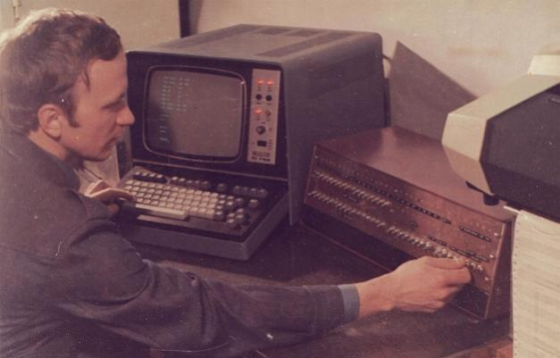

Материал статьи специально для этого сайта подготовил один из авторов компьютеров "Микро-80", "Радио-86РК", "Микроша" - Сергей Николаевич Попов.
Кстати, это он сам за первым экземпляром компьютера "Микро-80":

Частями информация этой статьи находится на форуме zx.pk.ru.
В 1978 году по странному стечению обстоятельств в МИЭМ (тогда Московский институт электронного машиностроения) пришла посылка из Киева (НПО Кристалл), адресованная на самом деле в ИНЭУМ (Институт электронных управляющих машин). Посылку мы приняли и заныкали. Вот так у нас появились первые К580ИК80 и К580ИК55 в планарном корпусе. Иногда, думаю, что это было не случайно... Ещё приятной неожиданностью стало то, что Геннадию Вадимовичу Зеленко (так официально по имени и отчеству - так как Геннадий был наш начальник, а мы были моложе ) удалось заиметь родной интелловский каталог семейства 8080.
В 1979 году мы разработали и собрали первый образец - прообраз Микро-80. В качестве терминала был Videoton-340 подключенный через 51 порт на скорости 1200 бит/с, считыватель перфолент FS-1500 (1500 символов в секунду!). ОЗУ было 4 Кбайта на микросхемах К565РУ2 (потом спаяли еще на 8 Кбайт - 64 микросхемы!). ПЗУ не было, а была платка с двумя микросхемами I2101 (256x4) для начального загрузчика. Первое время каждое утро надо было с тумблеров записывать в это ОЗУ загрузчик с перфоленты (около 50 байт). Затем загружался монитор с перфоленты. А потом Зеленко притащил аккумулятор на 6В от своего мотоцикла - через стабилизатор хватало на неделю... Первый монитор у нас был объёмом 4КБ, встроенный дизассемблер. В нем была полезная фича - на дампе памяти соединял "+" коды двух- и трехбайтовых команд. В общем получился нормальный такой микрокомпьютер.
Лет десять спустя я узнал о первом ПК - ALTAIR и был приятно удивлен совпадениями. Где-то видел тему, о том как бы надо было делать Микро-80. Похоже, альтернативы не было - повторение магистрально-модульной архитектуры миниЭВМ.
Где-то в это время нам перепало две микросхемы I2708 (1Кх8), и появилась возможность записать в ПЗУ монитор. Пришлось разработать программатор, программку и переписать монитор - сократив его до 2-х килобайт. Когда работали с первыми ультрафиолетовыми ППЗУ единственным средством стирания была оказавшаяся у кого-то венгерская лампа для загара. Она сильно грелась, а спектр больше подходил для людей, чем для I2708. Короче, ППЗУ помещалось где-то в полуметре от лампы, стиралось минут 30. Все ходили посреди зимы красные как раки. Потом был обнаружен в галантерейном отделе косметический прибор для МУЖЧИН!!! После бритья, якобы морду лица пооблучать... Замечательный прибор уже работает 30 лет. Да здравствует флэш и магниторезистивная память!
Мои коллеги - Геннадий Зеленко, Виктор Панов получили "вычислительное" образование и имели чёткое представление, каким должен быть компьютер. Я, наверное, к счастью, не имел таких представлений и сразу решил, что у меня дома тоже должен быть компьютер. Сейчас трудно себе представить, но мысль о том, что информацию можно отображать на экране телевизора, а программы и данные хранить на кассетном магнитофоне представлялась крамольной. (у подавляющего большинства отечественных телевизоров не было видеовхода, получить его было можно только покопавшись во внутренностях).
Поэтому я втихаря занялся дисплейным модулем и поиском метода записи на магнитофон. Сейчас, конечно, дисплейный модуль Микро-80 кажется примитивным, но радость, испытанная при получении первой картинки, ни с чем не сравнима. Псевдографический режим (где-то на выставке "Связь" подсмотрел на каком-то терминале) тоже казался верхом совершенства.
После перепробования разных методов (двухчастотная модуляция, манчестерский код) остановился на двухфазном кодировании. Записав и прочитав без ошибок на кассету С-90 почти мегабайт(!) чувствовал себя информационным банкиром.
Таким образом, к 1980 году появилось то, что можно было бы показывать людям.
Итак, 1980 год, мы переполненые желанием всем рассказать и показать как это здорово - микропроцессор и компьютер начали тыкаться повсюду. Посещали всякие организации (ИТМ и ВТ, ИНЭУМ, НИИ Счетмаш...). А там, конечно, у всех свои планы и представления.
Удалось, по случаю, показать машинку зам.министра Радиопромышленности СССР Горшкову. А надо сказать, что это министерство курировало почти всё производство вычислительной техники в СССР. Навсегда запомню невообразимую руководящую мудрость. Дословно: "Ребята, хватит заниматься ерундой. Персонального компьютера не может быть. Могут быть персональный автомобиль, персональная пенсия, персональная дача. Вы вообще знаете что такое ЭВМ? ЭВМ это 100 квадратных метров площади, 25 человек обслуживающего персонала и 30 литров спирта ежемесячно!"
Но тут партия и правительство в 1981 году приняло с чьей-то неслабой подачи постановление о развитии микропроцессорной техники в СССР, и дело сдвинулось, как ни странно. В начале 80-х в Москве сложилась, как сейчас говорят - неформальная тусовка на базе МНИИПИ - Международного института проблем управления. Там работал замечательный человек (царство небесное) Валерий Чуклов. Это был институт именно международный - для стран СЭВ. Начальник отдела проф. Дудников часто ездил за рубеж и привозил то софт, то микросхемы, то целый ZX81. Ну а еще всех привлекало наличие в лаборатории Валеры - INTELLEC MDS-800 - интелловской системы разработки. (По-моему в Москве было еще 2-3 штуки, но на закрытых ящиках). Именно оттуда и появилась CP/M 2.2 в СССР. Появилась, и я бросился изучать, адаптировать и ставить - а на что? К счастью братья-поляки освоили производство 8-дюймовых дисководов. Это было хитрое устройство - сдвоенный привод (потом многие познакомились с ним на ЕС-1800). Еще у него была одна странность - позиционировал головку на -1 дорожку, а не на нулевую. Почему - не знаю, но мне это здорово увеличило сроки разработки. От доброты душевной Валера подарил I8271 - контроллер флоппи. Быстро была спаяна плата, переписан BDOS и тут затык. Контроллер одинарной плотности выдает/принимает 1 байт за 32 мкс. А на процессоре с тактовой 1,77 МГц мне не хватало для приема и записи в буфер с индексацией указателя (ПДП-то не было!) буквально двух-трех микросекунд. Удалось найти нестандартное решение: по команде IN PORT процессор переходил в режим ожидания, а сигнал готовности байта формируемый I8271, сбрасывал триггер и осталось только считать байт. А так надо –
М: IN PORT
ANI MASK
JNZ М
Убрав 2 команды из цикла уложился в 32 мкс... С "-1" дорожкой удалось справиться - при появлении сигнала "Траск0" я формировал импульс на "Step+1" и получал 0 дорожку. Вместе с CP/M появилась возможность нормальной разработки, куча компиляторов, всяких экзотических в то время пакетов. Например, Multiplan - далекий предок Excel.
В конце 80-х прочитал в английской версии журнала Byte статью Стива Возняка о его рождественских семидневных мучениях с первым контроллером флоппи и драйвером. Решались те же проблемы быстродействия.
А вот еще вспомнилась история про загадочный матричный принтер фирмы WANG. В Госплан СССР было закуплено несколько этих популярных в 70-е годы американских миниЭВМ. Особенностью этой машинки был аппаратный интерпретатор Бейсика. Так вот она снабжалась матричным принтером с рулонной подачей бумаги, формат А3. У них валялся неисправный, и они с удовольствием от него избавились и ни малейшей документации (какая там техподдержка в те годы...). Принтер весил килограмм 30, но это был самый маленький в те времена, что мне приходилось видеть...
Теперь я знаю, что у него был интерфейс CENTRONICS - а в то время (79-й год) это непонятный разъём и НОЛЬ информации о контактах. И вот началась исследовательская работа ("взлом принтера" - сейчас даже как-то смешно…). Прежде всего, выяснилось что на ТТЛ сигналы он как-то реагирует. Через два 55-х порта и буфера был подключен к Микро-80. На него подавались всякие варианты сигналов, и регистрировалась реакция как программно, так и визуально. Иногда он что-то печатал, иногда дёргался, иногда начинал крутить бумагу. Но нашему человеку нет преград! Помучались, разобрались с контактами, управляющими кодами (оба-на - вдруг запечатал жирно и красиво...).
Так вот, помучавшись с непониманием, пришло нестандартное решение. Надо сказать, что я с 7-го класса был радиолюбителем, и у меня была детская мечта напечататься в журнале Радио. Я и предложил - давайте сходим туда (благо рядом), авось что и получится.
И вот, вооружившись фотографиями и набором умных слов, мы с Зеленко пришли в редакцию. Говорим, так и так, хотели бы на просветительской ниве поработать, много знаем, много умеем. Вообще, достойно представились. Общались с зам. главного редактора, великолепным профессионалом Степановым Б.Г. Опять совпадение - как раз партия указала на необходимость пропаганды микропроцессорной техники - а тут мы с неба свалились. В принципе первоначальные договорённости были о том, что неплохо бы в популярной форме рассказать о микропроцессорах и не более того. А мы - вот если схемы, программы, чтоб сами делали.... Ответ Степанова - "а где взять комплектующие, а как быть тем у кого нет доступа к какой либо ЭВМ?" Говорим: все сделаем с нуля, так, что с помощью палок и верёвок можно было все запустить.
Ну вообще понеслось... Честно говоря, когда недавно пересмотрел эти статьи - не стыдно. Настало время писать о программах и придумать как их распространять. И вот мы показываем HEX-dump Степанову и говорим - это программа МОНИТОР, её надо напечатать в журнале, и народ совершит подвиг, нащёлкает тумблерами, запишет в ПЗУ ("прошьет" - недавний термин) запустит и получит счастье. И тут неожиданно: "А что если народ нащелкает, запишет, запустит - а на экране СМЕРТЬ КПСС!" Сядем все!
Под честное пионерское дампы напечатали, народ нащёлкал, записал, запустил и на экране ни слова про КПСС...
Где-то в 82-83 году к нам в лабораторию пришли сначала студенты, а потом инженеры Дима Горшков и Юра Озеров. Талантливые ребята, получившие профильное образование. Дотошные, достаточно быстро выяснили, что в знакогенераторе МИКРО-80 я сделал закладку. В неотображаемый управляющий код 1EH я вставил свои инициалы - СП:
(Проступок совершен по молодости, думаю меня можно простить...). Ребята тут же написали на Бейсике программку "Бомбардировщик". Из летящего самолетика надо сбрасывать бомбы на выскакивающих внизу ... Дима и Юра внесли свежую струю. Дима как программист, Юра - как аппаратчик. С ними (но не только) связано появление РК86.
В 1983 году по инициативе академика Ершова Андрея Петровича создавался журнал "Микропроцессорные средства и системы". Помню, нам позвонили, представились и предложили написать статью для первого номера 1984 года. Я тогда как раз пытался решить задачу - как запускать CP/M без дисков. Слава Богу, появилась память 565РУ5 и 64К или даже 128К уже были реальны.
Надо было найти способ переключения страниц памяти, чтобы организовать электронный диск. Нашлось решение - использовать признак обращения к стеку в слове состояния для переключения банков. Сказано - сделано, написан драйвер для CP/M. Создана лента - образ диска. Загрузил, запустил - и ты в ДОС, хотя наверное, это уже не дисковая, а магнитофонно-оперативная МООС система...
Отношения с журналом складывались достойно, за несколько лет был опубликован ряд статей. Через журнал появились новые знакомства, новые необычные ощущения... Я имею в виду следующее:
Где-то в 85-86 году МПСиС организовал в большом зале Политехнического музея цикл лекций по микропроцессорам и компьютерам. Пришлось читать там несколько лекций. Необычность ощущений связана с каким-то, пожалуй, философским чувством. Помню, что-то рассказываю, аудитория полна, а я вспоминаю кадры хроники, как в этом же зале в шестидесятые читали свои стихи при полной аудитории Евтушенко, Вознесенский, Ахматова. Думаешь: надо же, мир стал более рациональным что ли. Полный зал физиков, а не лириков...
После публикаций в журнале Радио к нам повалили гости (а в редакции нам передавали буквально мешки писем). Самый разнообразный народ. Вообще, всё было вполне осознанно. Мы понимали, что в небогатой на события, интересную информацию и развлечения обстановке возможность самому сделать компьютер, написать для него программу - это какой-то новый вид деятельности, захватывающий, необычный, будоражащий... Да потому что сами прошли через это.
Из интересного - это обращение к нам из института трансплантологии искусственных органов. Требовалось сделать что-то вроде системы контроля потока крови (вот ведь не помню уже - записывать надо). Академик Шумаков проводил тогда первые операции на телятах. Не всё было удачно, поэтому в столовке института всегда была свежая телятина - и это был немаловажный фактор для углубления сотрудничества...
Вспоминается серьезный мужчина, приехавший с БАМа, где он занимался проектированием мостов и туннелей. Он сразу взял быка за рога - "Ты мне делаешь компьютер, я тебе плачу деньги". Я не сразу согласился, но предложенные им 1500 руб. сыграли свою роль. Получился замечательный такой комп в корпусе от усилителя для кинозалов КИНАП. Кстати в этой связи у меня есть почетная грамота за помощь в строительстве БАМа!!!
Где-то в эти годы (1982-1984) к нам приехал Донат Темиразов из Кишинева. Огромный такой парень - под два метра ростом. Высокий профессионализм сразу подкупил. Он часто бывал у меня дома. Основное развлечение - запись с дискет на ленту всяких программ. Считаю его компьютер Вектор-06Ц - лучшим из отечественных 8-разрядных. Очень лаконичная конструкция, масса собственных идей. Я бы сравнил его со спектрумом по оригинальности решений, инженерному минимализму и доступности для повторения. Донат в конце 80-х перебрался в Москву, встречались, но уже 20 лет не виделись. Конечно популярность компьютера на 70% это его ПО, но и технические возможности конечно...
В 1985 году прошел слух - именно слух, что предполагается компьютеризация школ и якобы объявлен конкурс на школьный компьютер. Ну, мы подхватились - надо делать одноплатный компьютер, минимум микросхем, интегрированный в корпус с клавиатурой. В это время микропроцессорный набор К580 расширялся, и удалось воспроизвести i8275 - КР580ВГ75. Он и стал основой.
Схемотехника в основном реализована Юрием Озеровым. Адаптацию монитора сделал Дмитрий Горшков. Встал вопрос, как назвать - тут Виктор Панов говорит – МИКРОкомпьютер, ШколА - предлагаю "МИКРОША". Мы уже свыклись с этим названием. Изготовили несколько экземпляров навесным монтажом. (Кстати в Википедии обнаружил, что оказывается был такой персонаж в Незнайке Носова - Микроша. Может Виктор дочке Незнайку читал в это время?) Конкурс прошел мимо… Там была предложена продуманная система УКНЦ...
Вспоминаю, что у нас было много споров о составе компьютера. Я к этому времени уже сделал полнофункциональный компьютер, содержащий ГФ24, ВК28, ВН59, ВТ57, ВИ53, ВВ55, ВВ51. Я предлагал задействовать всю мощь набора и обеспечить шину расширения. Но возобладали минималистские взгляды (жизнь показала, что оно к лучшему). Правда, я потом немного оторвался на Микроше, но об этом потом...
Итак мы опять потянулись в Радио... Микроша, микроша - а нам - "РАДИО-86РК" и точка! Ну так, продолжу. Не помню с чей подачи, протекции, мы поехали с Зеленко на ЛЭМЗ демонстрировать РК86 (Микрошу). ЛЭМЗ уже имел опыт производства АГАТа. Нами двигал чистый энтузиазм, собственное эго, пожалуй... Никакой коммерции. Увидеть свою разработку в промышленном виде - вот оно счастье. Были приняты директором и главным инженером. В кабинете директора подключились к его телевизору (помнится что-то пришлось нашаманить внутри по-быстрому, под обещание, что ТВ не сгорит). Позагружали программки, штуки три. Поговорили, что-то отвлеклись. Я сидел рядом, слышу, главный инженер на ухо директору нашептывает: "Да у них всего три программки, вообще ерунда, народ брать не будет". И тут я приобщился к принципу мыслительного процесса настоящего руководителя. Директор немного подумал и сказал: "У нас народ, когда Жигули покупает, кто-нибудь, хоть раз спросил - "а бензин есть?". Вот и компьютеры будут брать!" Сама поездка, по сути, была инспирирована нашим недопониманием, что совокупный производственный потенциал любителей в те годы превышал возможности любого предприятия. В принципе, это одна из причин отличий между РК и Микрошей.
Микроша, в том виде как она известна - по странному стечению обстоятельств одновременно и сын и отец РК86. Микроша в качестве имени была раньше, а "тело" приобрела позже. А по сути, Микроша это такой же клон РК, как и все остальные - улучшения, расширения...
Я решил сделать возможность расширения, звук на таймере, ОЗУ 32К. Ну Вы знаете... Очень сожалею, но не помню абсолютно ФИО того человека на ЛЭМЗ, который курировал и возглавлял всю работу (резервные копии полезны не только для жестких дисков...). Может, кто напомнит? Первый экземпляр разведенной платы передали мне и я его отлаживал (где-то антресолях должен сохраниться...)
Первые экземпляры Микроши были уникальной вещью - совершенные бронированные машины... Корпус, пока не было пресс-формы, был алюминиевый, так думаю фрезерованный из цельного куска. Вес - килограмм 5-6! Приятно в руки взять...
Монитор переписал под новые реалии в Микроше. Помня описанный выше разговор главного инженера с директором, решил написать какую-нибудь игрушку для Микроши. У меня подрастал сын - и для него тоже. Так появилась игра "Цирк". Пару лет спустя увидел "Арканоид" - идеи действительно витают в воздухе...
Кстати, о сыне. Когда я писал про программирование на Бейсике для Радио (в 1984, а вышло в 1985), то основные тезисы записывались в такой обстановке: одна рука качает коляску, другая стучит по клавишам... (Да, многим наверное знакома ситуация). Ну вот пассажир коляски и стал тем самым - "АНТОН, СКОЛЬКО БУДЕТ..." , "МОЛОДЕЦ АНТОН!" и т.д.
Компьютеры, микропроцессоры... Сегодня их влияние на жизнь не замечает разве что ленивый. Весьма курьезный случай, произошедший году так в 1987 и мне дал зримые подтверждения этого влияния. Хотя, конечно, весьма в своеобразной форме:
Раздается звонок в квартиру. Приоткрываю дверь. Сразу в проём просовывается внушительного вида чемодан. За чемоданом его владелец, интеллигентного вида мужчина. Недоуменно смотрю на него и жду разъяснений. Первая фраза - "Я развелся с женой", вид чемодана, заставили мысленно перебрать массу не очень приятных вариантов. Но далее последовало разъяснение, которое все поставило на свои места. Он объяснил, что жена не дает видеться с ребенком, если он не обеспечит ребенка компьютером.
Мужчина, на мой взгляд, совершил подвиг. Будучи человеком далеким от этих вопросов сам прочитал описание РК, раздобыл комплектующие, спаял. Все заработало! Но проблемы с записью и чтением с магнитофона... И вот открывается чемодан - там РК, магнитофон, компактный телевизор. Мы расположились у меня. РК работает, магнитофон новенький с иголочки, всё воспроизводит, даже Пугачеву... Убедившись, что с РК все в порядке, я предложил ему разобрать эту "Электронику", честно предупредив, что гарантию он потеряет. Разобрал... Хоть бы один проводок какой для приличия был припаян к разъему внутри магнитофона... Припаяли, порядок. На первое время это помогло (она, бывшая жена, думала что поставила перед ним совершенно невыполнимую задачу - не тут-то было!). Потом он звонил мне, сказал, что "старуха" требует теперь что-то совсем безумное... Вот, такая история для несуществующего журнала "Микропроцессоры и жизнь"...
© 2011 Сергей Попов